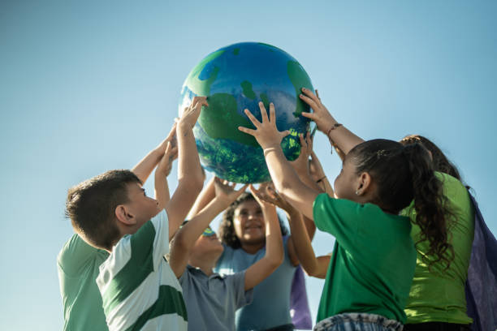

Tipos de reciclados
El reciclaje es un proceso que consiste en convertir materiales de desecho en materia prima o en otros productos, de manera de extender su vida útil y combatir la acumulación de desechos en el mundo.Es importante recordar que cada material tiene su propio proceso de reciclaje y que es importante separar los residuos para que puedan ser reciclados de manera efectiva. Hay varios tipos de reciclaje, cada uno con su propio proceso y finalidad. A continuación, se presentan algunos de los tipos de reciclaje más comunes:
Reciclaje Mecanico
Este tipo de reciclaje implica la separación y clasificación de los materiales según su tamaño, forma y composición. Se utiliza para reciclar materiales como el papel, el cartón, el vidrio y el plástico.

Reciclaje Quimico
En este tipo de reciclaje, los materiales se someten a procesos químicos para cambiar su estructura química y convertirlos en materia prima. Se utiliza para reciclar materiales como el plástico y el vidrio.

Reciclaje Biológico
Este tipo de reciclaje implica la degradación de los materiales orgánicos en presencia o ausencia de oxígeno. Se utiliza para reciclar materiales como la comida y los residuos biológicos.
Reciclaje Energético
En este tipo de reciclaje, los materiales se utilizan como fuente de energía, como combustible o para generar electricidad.
Reciclaje de Textiles
En este tipo de reciclaje, los textiles se clasifican y se someten a procesos de limpieza y transformación para convertirlos en materia prima.